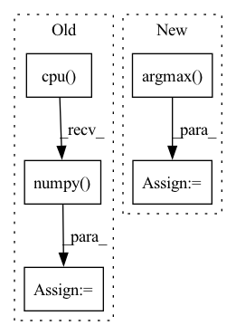

Pattern ID :26463
Before Change
pred = torch.ones_like(scores)
pred[scores <= .5] = 0
y_pred = pred.cpu().numpy().flatten()
auc_scores = scores.detach().cpu().numpy() .flatten()
res = {
"accuracy": accuracy_score(y_true, y_pred),After Change
if y.dim() == 1:
y_true = y.cpu().numpy().flatten()
else:
y_true = torch.argmax( y, dim=-1) .cpu().numpy().flatten()
pred = torch.argmax(scores, dim=-1)
y_pred = pred.cpu().numpy().flatten()In pattern: SUPERPATTERN
Frequency: 3
Non-data size: 5
Instances Fragment ID: 79296427
Project Name: makgyver/gossipy
Commit Name: 31a93a404f8bfba3869c5eb733962a438f4806f0
Time: 2021-08-29
Author: mak1788@gmail.com
File Name: gossipy/model/handler.py
M Class Name: TorchModelHandler
N Class Name: TorchModelHandler
M Method Name: evaluate(2)
N Method Name: evaluate(2)
M Parent Class: ModelHandler
N Parent Class: ModelHandler
M File Name: gossipy/model/handler.py
N File Name: gossipy/model/handler.py
M Start Line: 93
M End Line: 103
N Start Line: 99
N End Line: 123
Before Change
Converts indices to string labels, and adds a `"label"` key to the result.
predictions = output_dict["probs"].cpu().data.numpy()
argmax_indices = numpy.argmax(predictions, axis=-1)
labels = [self.vocab.get_token_from_index(x, namespace="labels") for x in argmax_indices]
output_dict["label"] = labels
return output_dictAfter Change
predictions_list = [predictions]
classes = []
for prediction in predictions_list:
label_idx = prediction.argmax(dim=-1) .item()
label_str = self.vocab.get_index_to_token_vocabulary("labels").get(
label_idx, str(label_idx)
) Fragment ID: 79296426
Project Name: allenai/allennlp-models
Commit Name: 4b1392424079e79a39dec47c72aefed412bec3fd
Time: 2021-04-01
Author: nelson-liu@users.noreply.github.com
File Name: allennlp_models/pair_classification/models/bimpm.py
M Class Name: BiMpm
N Class Name: BiMpm
M Method Name: make_output_human_readable(2)
N Method Name: make_output_human_readable(2)
M Parent Class: Model
N Parent Class: Model
M File Name: allennlp_models/pair_classification/models/bimpm.py
N File Name: allennlp_models/pair_classification/models/bimpm.py
M Start Line: 236
M End Line: 239
N Start Line: 242
N End Line: 254
Before Change
(def_seg, _, _, _) = lddmm.applyThisTransform(x_seg, interpmode="nearest")
flow = lddmm.computeThisDisplacement()
flow = np.stack(flow, axis=0)
def_seg = def_seg[-1].cpu().numpy()
def_seg = torch.from_numpy(def_seg[None, None, ...])
tar_seg = torch.from_numpy(y_seg[None, None, ...])
dsc_trans = utils.dice_val(def_seg.long(), tar_seg.long(), 46)
eval_dsc_def.update(dsc_trans.item(), 1)
After Change
(def_seg, _, _, _) = lddmm.applyThisTransform(x_seg_oh[0, i, ...], interpmode="bilinear")
x_segs.append(def_seg[-1][None, None, ...])
x_segs = torch.cat(x_segs, dim=1)
def_seg = torch.argmax( x_segs, dim=1, keepdim=True)
flow = lddmm.computeThisDisplacement()
flow = np.stack(flow, axis=0)
//def_seg = def_seg[-1].cpu().numpy()
Fragment ID: 79296423
Project Name: junyuchen245/transmorph_transformer_for_medical_image_registration
Commit Name: ec64eeca27e8c76ff542d65f42b73a4ec8c82640
Time: 2022-09-07
Author: jchen245@jhmi.edu
File Name: IXI/Baseline_traditional_methods/LDDMM/infer_IXI.py
M Class Name: AnonimousClass
N Class Name: AnonimousClass
M Method Name: main(0)
N Method Name: main(0)
M Parent Class:
N Parent Class:
M File Name: IXI/Baseline_traditional_methods/LDDMM/infer_IXI.py
N File Name: IXI/Baseline_traditional_methods/LDDMM/infer_IXI.py
M Start Line: 62
M End Line: 83
N Start Line: 59
N End Line: 92